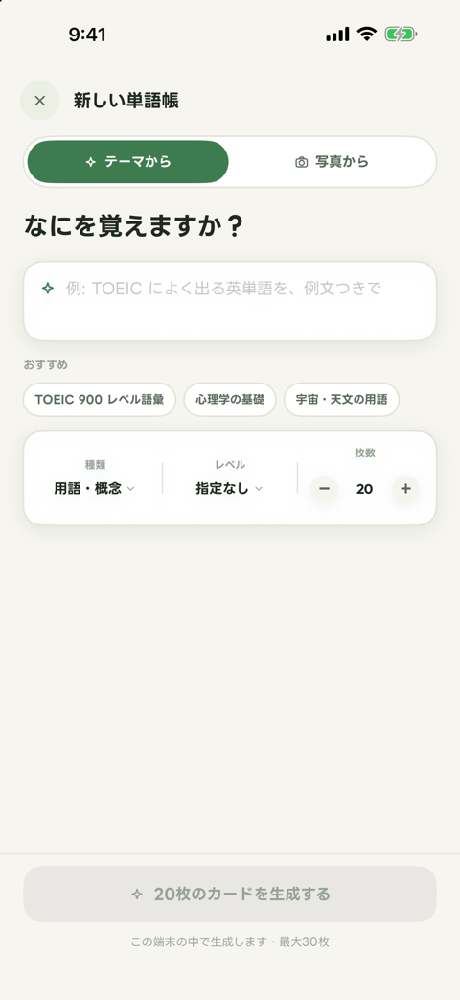
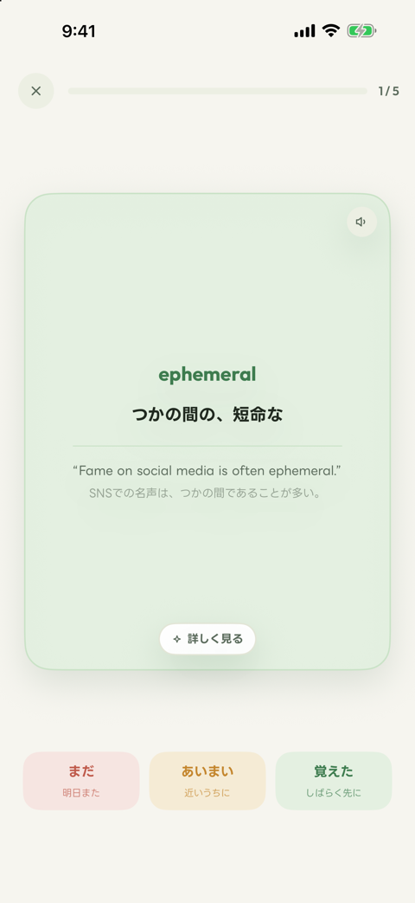
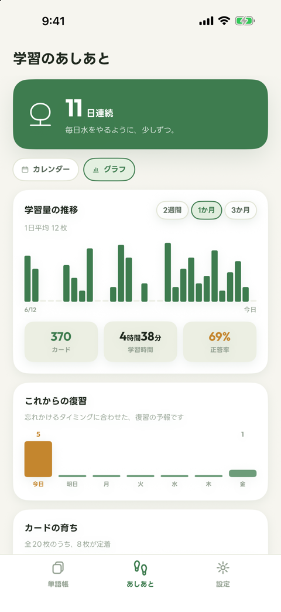
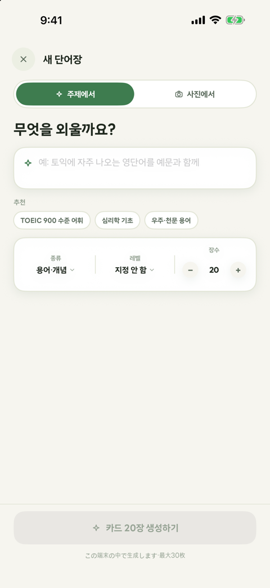
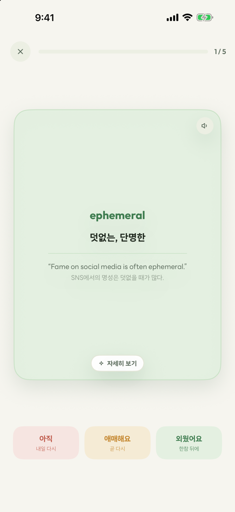
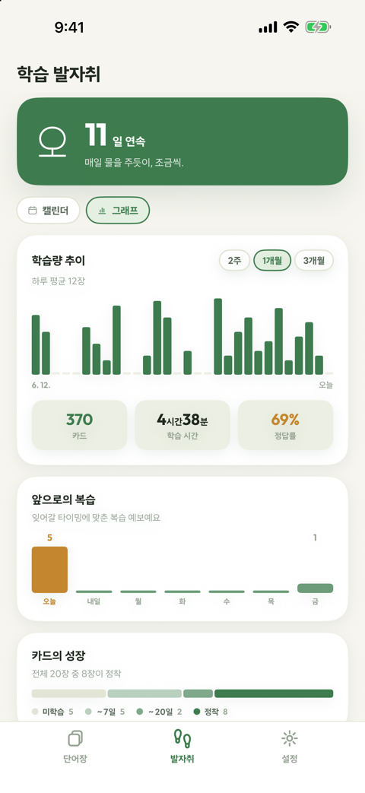
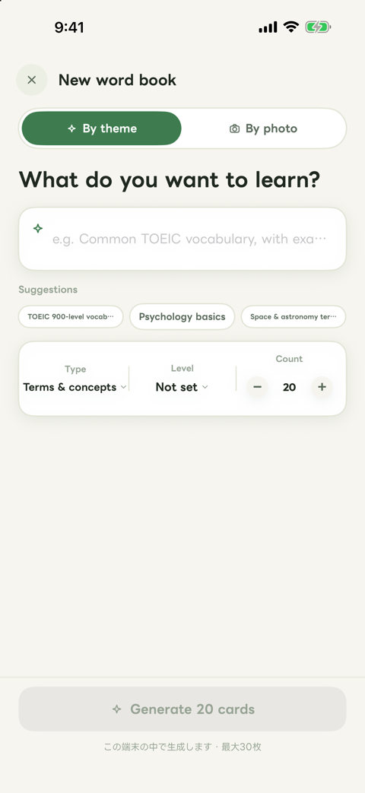
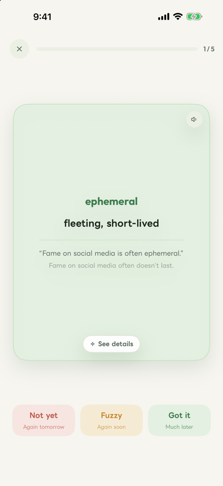
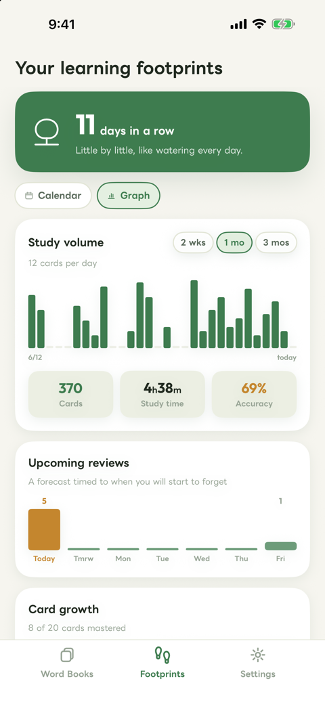

言葉が、根づく。그 단어가, 뿌리내리다.Let the words take root.
作る手間はAIに。くり返すほど、言葉はあなたに根づく。
英単語も、資格の用語も、講義の専門用語も。
生成も学習データも、すべて端末の中で。만드는 수고는 AI에게. 반복할수록 단어는 당신에게 뿌리내려요.
영단어도, 자격증 용어도, 강의의 전문 용어도.
생성도 학습 데이터도 모두 기기 안에서.Let AI do the making — every review roots the words deeper.
Vocabulary, exam terms, lecture concepts, and beyond.
Everything runs on your device.
iPhone で公開中iPhone에서 이용 가능Now on the App Store for iPhone
3枚だけ、覚えてみる？딱 3장만 외워 볼까요?Learn 3 cards, right here.
まずは英単語を2枚、それから心理学を1枚。
タップしてめくり、3段階で自己採点 — 英語も、それ以外のテーマも、覚え方は同じです。먼저 영단어 2장, 그다음 심리학 1장.
탭해서 뒤집고 3단계로 채점 — 영어도, 그 외의 주제도 외우는 방법은 같아요.Two vocabulary words, then one psychology term.
Tap to flip, grade yourself — same flow for any topic.
1周おわり！한 바퀴 끝!Round complete!
アプリでは、カードが忘れかけた頃にまた会いに来ます。覚えるたびに、単語帳は種から木へ育ちます。앱에서는 잊어버릴 때쯤 카드가 다시 찾아와요. 외울수록 단어장은 씨앗에서 나무로 자라요.In the app, cards come back right before you forget. Every recall grows your word book from seed to tree.
AIが単語帳を作るAI가 단어장을 만들어요AI builds your word books
英単語といった語学だけでなく、資格・講義の専門用語も。テーマの入力やノートの撮影から、意味・例文つきのカードを自動生成。영단어 같은 어학뿐 아니라 자격증・강의의 전문 용어도. 주제 입력이나 노트 촬영으로 뜻・예문이 딸린 카드를 자동 생성.Not just language vocab — exam and lecture terms too. Cards with meanings and examples, from a topic or a photo of your notes.
忘れかけた頃に、もう一度잊어버릴 때쯤, 다시 한번Right before you forget
記憶科学にもとづく間隔反復で、忘れかけたカードだけを出題します。기억 과학에 기반한 간격 반복으로, 잊을 때가 된 카드만 출제해요.Spaced repetition, backed by memory science, brings back only the cards you're about to forget.
プライベート ・ オフラインOK프라이빗 ・ 오프라인 OKPrivate & works offline
生成も学習データも端末の中だけ。アカウント不要で、基本無料です。생성도 학습 데이터도 기기 안에서만. 계정 불필요, 기본 무료예요.Everything stays on your device. No account needed, free to use.
作ったあとも、AIといっしょに만든 뒤에도 AI와 함께AI stays with you
カードごとに例文を追加したり、「どういう場面で使う？」と自由に質問したり。わからないを、その場で解消。카드마다 예문을 추가하고, "어떤 상황에서 써?"라고 자유롭게 질문. 궁금증을 그 자리에서 해결해요.Add more examples to any card, or simply ask — "when would I use this?" Get answers on the spot.
学びのあゆみが、見える。배움의 발자취가 보여요.See your progress.
学習量・学習時間・正答率をグラフで振り返り。これからの復習は7日間の予報で、カードの育ちはひと目で。バーに触れると、日ごとの記録も見えます。학습량・학습 시간・정답률을 그래프로 돌아보기. 앞으로의 복습은 7일 예보로, 카드의 성장은 한눈에. 막대에 닿으면 날짜별 기록도 보여요.Charts for daily cards, study time, and accuracy. A 7-day review forecast, and card growth at a glance. Touch the bars for day-by-day details.
アプリの中を、少しだけ앱 속을 살짝A peek inside
育てる楽しさを、そのまま画面に。키우는 즐거움을 화면에 그대로.The joy of growing, right on screen.















ドキュメント문서Documents
お問い合わせ문의Contact
ご質問・不具合のご報告は、メールでお気軽にお寄せください。질문이나 오류 제보는 메일로 편하게 보내 주세요.Questions or bug reports? Drop us a line anytime.
sproot.app@gmail.com